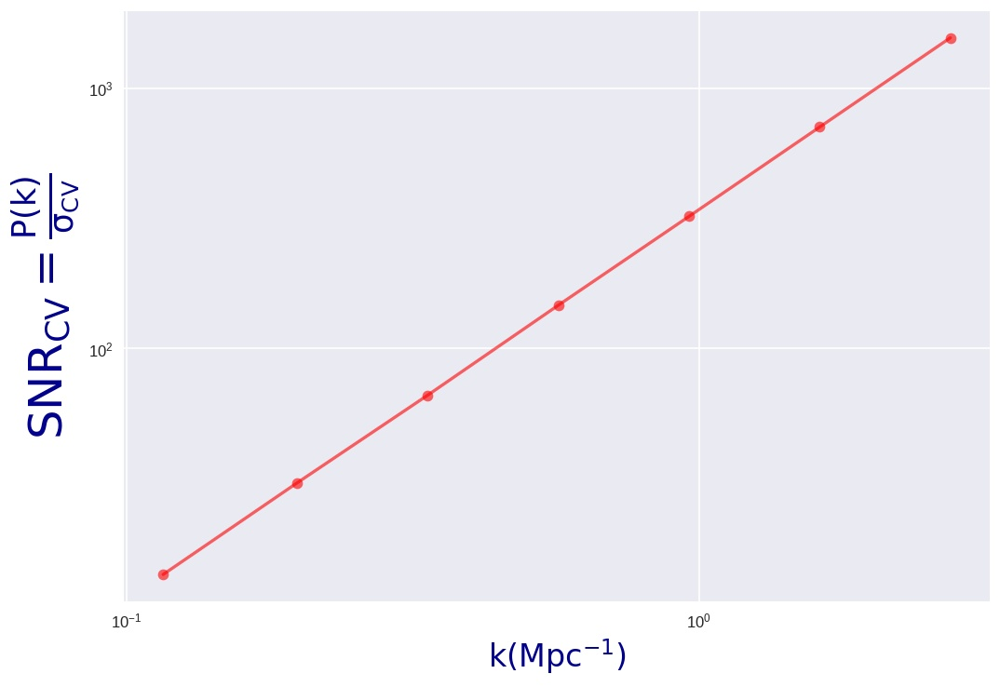
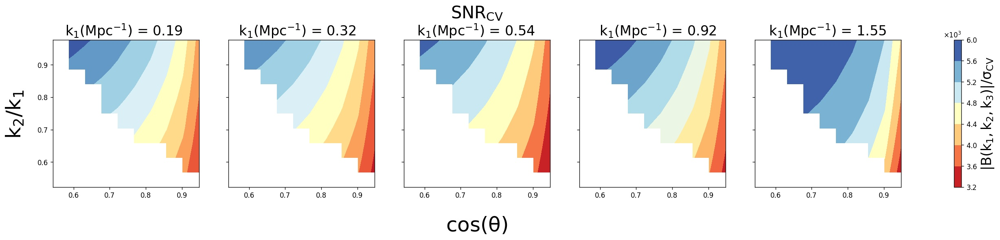
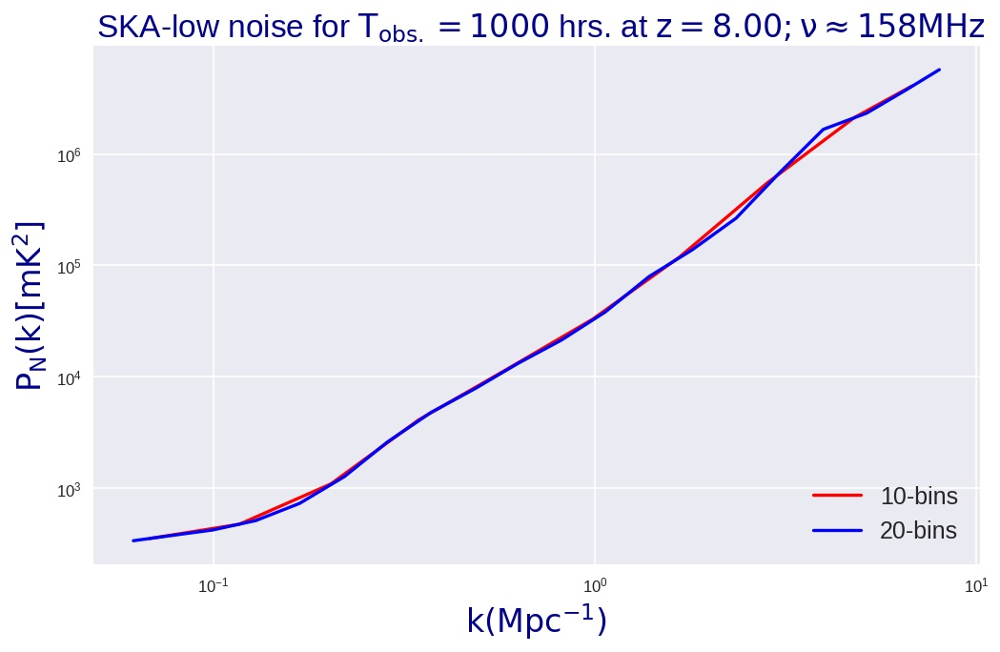
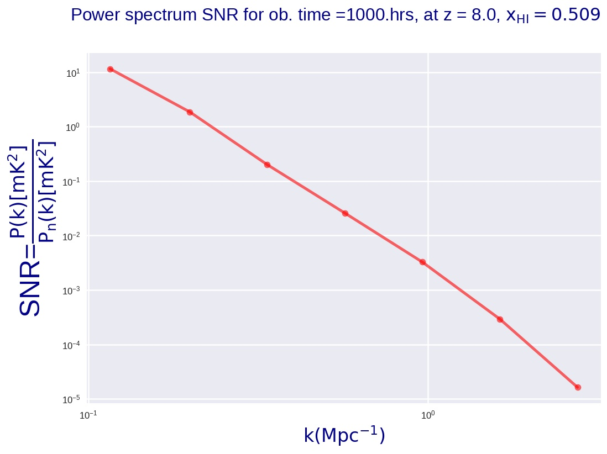
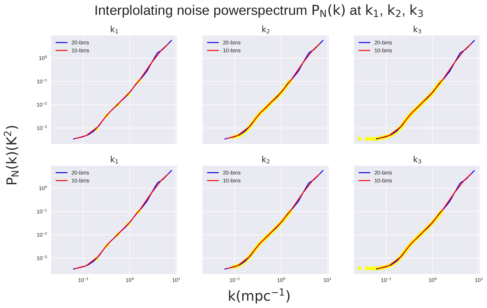
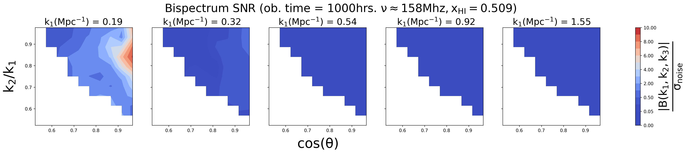

Co-variance & Noise¶
The ultimate goal of ours is to constrain the astrophysical model parameters using emulated EoR signal statistics. We use Bayesian Inference to do this exercise. We assume a clean signal with all foregrounds removed.
Likelihood function comprises of co-variance matrix. We have included sample variance and noise as our co-variance.
Sample variance¶
It is the intrinsic error associated with each cosmic realization. In this case, we are including number of k-modes contributing to a powerspectrum OR number of triangles contributing to a bispectrum. The Signal to Noise (SNR) for powerspectrum and bispectrum:
 {kind=link}
Noise¶
Noise powerspectrum¶
We are using SKA-low instrumental noise for 1000 hours of observation time at redshift z = 8.0.
Noise powerspectrum can are plotted against the k-modes.
{kind=link}
Powerspectrum SNR
{kind=link}
Noise bispectrum¶
Bispectrum noise variance can be calculated if one can get noise powerspectrum at the three k-modes. We tried interpolation methods for this generate noise powerspectrum at (k1,k2,k3).
Thereafter we measured bispectrum SNR.
